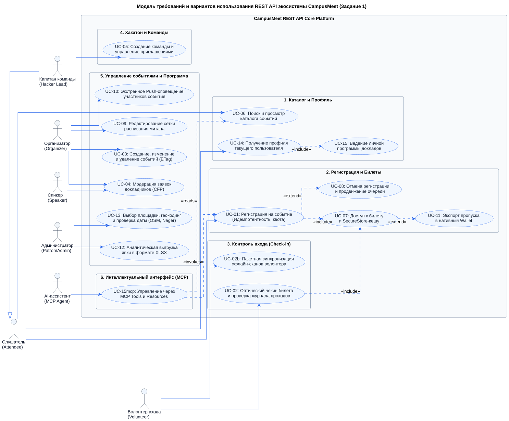
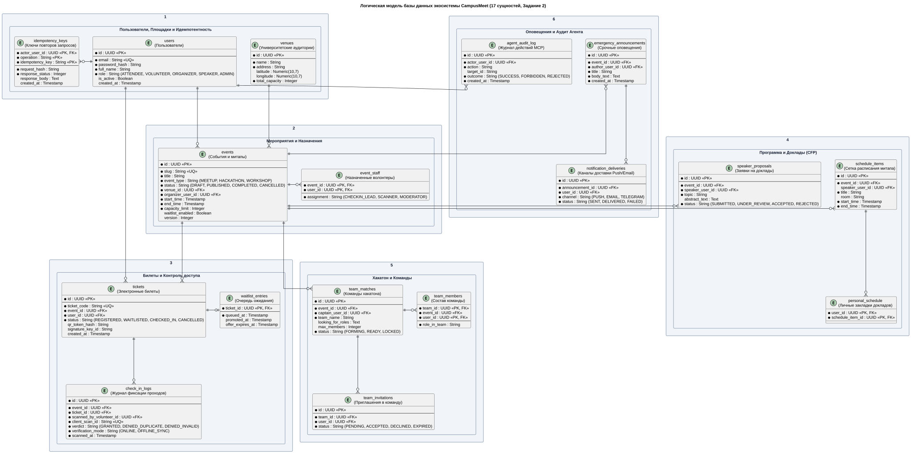
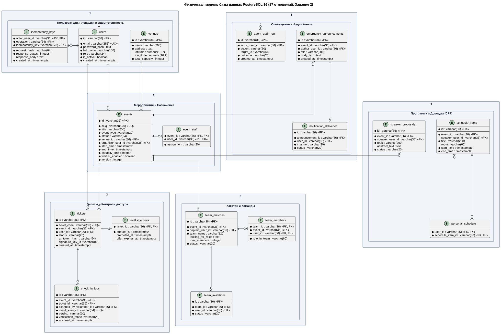
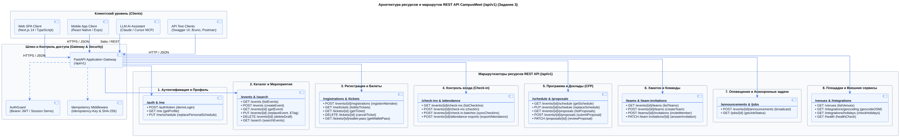
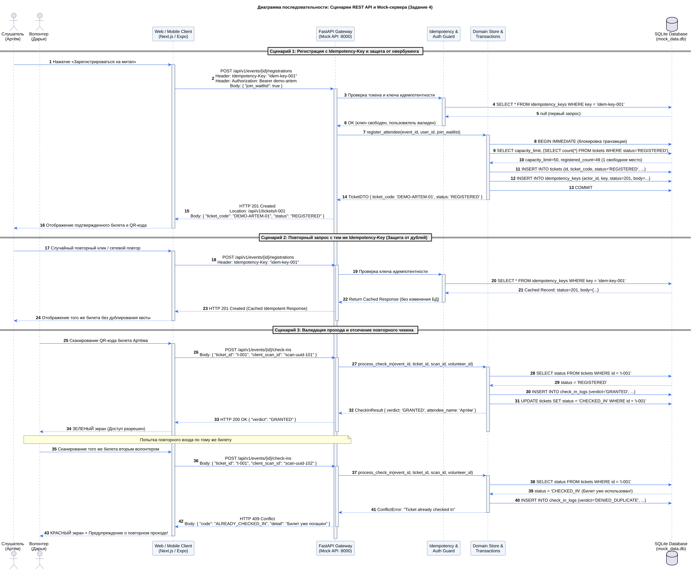
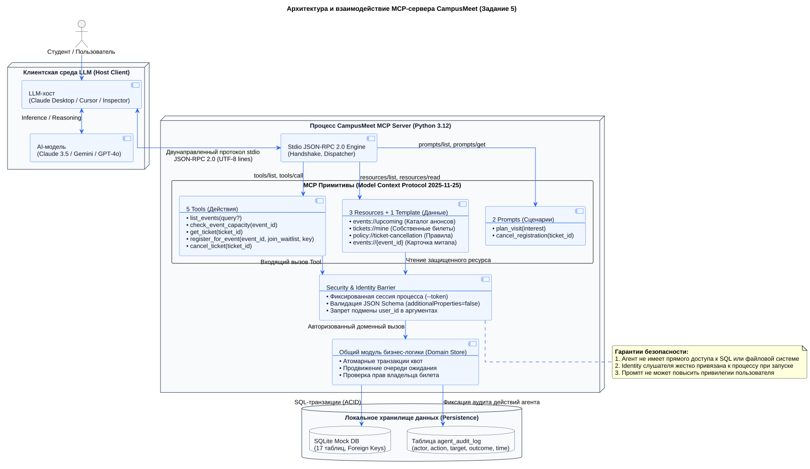
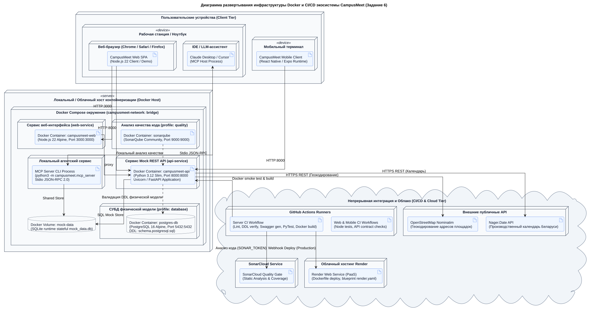

Лабораторная работа №4: Стили интеграции программных систем и проектирование API
Формализация интеграционных требований, контрактное проектирование REST API (OpenAPI 3.0.3), реляционные модели данных (PostgreSQL 16 / SQLite), агентный сервер Model Context Protocol (MCP) и контейнеризация Docker
Паспорт Лабораторной работы №4
В рамках лабораторной работы реализован переход от требований и информационной архитектуры (Лаб. 1–3) к строгим исполняемым контрактам интеграции. Разработана сквозная спецификация REST API /api/v1, спроектирована нормализованная база данных на 17 таблиц, развернут stateful Mock-сервер с поддержкой идемпотентности, реализован прототип MCP-сервера для диалогового управления через AI-ассистентов и настроены контейнеры Docker Compose.
1. Модель требований: Действующее лицо → User Story → Use Case (Задание 1)
Ортогональная диаграмма вариантов использования REST API: декомпозиция акторов на пользовательский контур (Слушатель, Капитан, Волонтер) и организационный контур (Организатор, Спикер, Администратор, MCP-агент) со связями <<include>> и <<extend>>.

Матрица ролей, пользовательских историй и вариантов использования (Рисунок 1)
| Действующее лицо (Роль) | Пользовательская история (User Story) | Вариант использования (Use Case) | Маршрут и метод API |
|---|---|---|---|
| Слушатель (Attendee) | US-01: Поиск митапов по тематикам и датам US-02: Регистрация с гарантией квоты места US-08: Просмотр билета и отмена брони |
UC-06: Поиск и каталог событий UC-01: Регистрация на событие UC-07/08: Управление билетом |
GET /eventsPOST /events/{id}/registrationsDELETE /tickets/{id} |
| Волонтер (Volunteer) | US-06: Сканирование билета на входе US-07: Автономная валидация без интернета |
UC-02: Оптический чекин билета UC-02b: Пакетная синхронизация сканов |
POST /events/{id}/check-insPOST /events/{id}/check-in-batches |
| Организатор (Organizer) | US-10: Создание события и квот залов US-13: Конструктор сетки докладов US-14: Модерация заявок докладчиков CFP US-15: Экстренная Push-рассылка участникам |
UC-03: Управление событиями (ETag) UC-09: Сетка расписания UC-04: Модерация заявок CFP UC-10: Экстренное Push-оповещение |
POST /events, PUT /events/{id}PUT /events/{id}/schedulePATCH /proposals/{id}POST /events/{id}/announcements |
| Спикер (Speaker) | US-20: Подача тезисов и презентации CFP | UC-04: Подача заявки доклада | POST /events/{id}/proposals |
| Капитан команды (Hacker Lead) | US-17: Создание команды хакатона и добор | UC-05: Команды и инвайты | POST /events/{id}/teamsPOST /teams/{id}/invitations |
| Администратор (Patron / Admin) | US-11: Аудит вместимости аудиторий US-16: Аналитическая выгрузка явки |
UC-13: Аудит площадки и даты UC-12: Аналитическая выгрузка явки |
GET /venuesPOST /events/{id}/attendance-exports |
| AI-ассистент (MCP Agent) | US-MCP: Диалоговый подбор митапа и регистрация | UC-15mcp: Вызовы MCP Tools / Resources | tools/call register_for_eventresources/read tickets://mine |
Проектирование логической и физической моделей базы данных (Задание 2)
17 нормализованных отношений (3NF/BCNF), ограничения ссылочной целостности, внешние ключи, типы данных PostgreSQL 16 и локальный встраиваемый рантайм SQLite
Архитектура слоя персистентности данных
Схема базы данных спроектирована под целевую промышленную СУБД PostgreSQL 16. Модель состоит из 17 отношений, декомпозированных на 6 доменных кластеров. Для обеспечения полной автономности локального запуска Mock-сервера и MCP-агента без внешних сетевых зависимостей реализован эквивалентный DDL-скрипт для встраиваемой СУБД SQLite с сохранением строгой семантики внешних ключей и транзакций.
1. Логическая модель данных (ER-диаграмма)
Логическая структура 17 сущностей: кардинальности связей (1:N, 1:1), первичные ключи (PK) и логические типы атрибутов.

2. Физическая модель данных (PostgreSQL 16)
Физическая реализация: точные типы полей (varchar, timestamptz, numeric, text), внешние ключи (FK) и уникальные ограничения (UQ).

Реестр 17 отношений и ключей реляционной модели (Рисунки 2 и 3)
| Таблица (Отношение) | Первичный ключ (PK) | Внешние ключи (FK) | Назначение в архитектуре |
|---|---|---|---|
users | id (varchar 36) | — | Учетные записи (слушатели, волонтеры, организаторы, спикеры, админы) |
venues | id (varchar 36) | — | Университетские аудитории, координаты (lat/lon) и максимальная вместимость |
events | id (varchar 36) | venue_id, organizer_user_id | Мероприятия (митапы, хакатоны), квоты, таймлайн, версия ETag |
event_staff | event_id, user_id | event_id, user_id | Назначенные волонтеры контроля входа и модераторы залов |
tickets | id (varchar 36) | event_id, user_id | Электронные билеты с QR-хешем и статусом (REGISTERED, CHECKED_IN) |
waitlist_entries | ticket_id | ticket_id | Очередь ожидания при исчерпании квоты с таймером подтверждения |
check_in_logs | id (varchar 36) | event_id, ticket_id, scanned_by_volunteer_id | Журнал фиксации проходов: вердикты GRANTED / DENIED_DUPLICATE |
schedule_items | id (varchar 36) | event_id, speaker_user_id | Сетка программы митапа (таймслоты, темы, аудитории, докладчики) |
speaker_proposals | id (varchar 36) | event_id, speaker_user_id | Заявки на выступления (CFP) со статусами SUBMITTED / ACCEPTED |
personal_schedule | user_id, schedule_item_id | user_id, schedule_item_id | Персональная программа докладов слушателя (закладки) |
team_matches | id (varchar 36) | event_id, captain_user_id | Команды хакатона, профиль поиска ролей и лимиты состава |
team_members | team_id, user_id | team_id, event_id, user_id | Состав участников команды с указанием специализации |
team_invitations | id (varchar 36) | team_id, user_id | Приглашения и заявки на вступление в команду хакатона |
emergency_announcements | id (varchar 36) | event_id, author_user_id | Срочные широковещательные оповещения организатора |
notification_deliveries | id (varchar 36) | announcement_id, user_id | Статусы доставки сообщений по каналам Push, Email, Telegram |
idempotency_keys | actor_user_id, operation, idempotency_key | actor_user_id | Кэш ключей идемпотентности: хеш тела, код HTTP и тело ответа |
agent_audit_log | id (varchar 36) | actor_user_id | Журнал аудита действий AI-ассистента через протокол MCP |
Проектирование и реализация REST API и Mock-сервера (Задания 3 и 4)
Спецификация OpenAPI 3.0.3, 33 конечные точки, семантика HTTP, идемпотентность, ETag concurrency, RFC 7807 Problem Details и исполняемый Mock-сервер
1. Архитектура ресурсов REST API (/api/v1) (Рисунок 4)
Модульная архитектура маршрутизаторов: шлюз безопасности, проверка токенов Bearer JWT, фильтрация повторных вызовов по Idempotency-Key и 8 ресурсных контроллеров.

2. Диаграмма последовательности работы REST API и Mock-сервера (Рисунок 5)
Сценарии вызовов: регистрация с Idempotency-Key и транзакционным контролем квот, повторный сетевой запрос (возврат кешированного 201 Created) и отсечение повторного чекина (409 Conflict).

Запуск и автономное тестирование Mock API
Mock-сервер реализован на Python 3.12 (модуль campusmeet.mock_api) без сторонних фреймворков на базе стандартной библиотеки http.server и встроенной СУБД sqlite3:
# Запуск Mock API сервера (порт 8000)
cd CampusMeet-Server
python3 -m campusmeet.mock_api
# Запуск полного набора unit-тестов API и контрактов (34 теста)
python3 -m unittest discover -s tests -vПроектирование и реализация MCP-сервера (Задание 5)
Стандарт Model Context Protocol (MCP 2025-11-25), транспорт stdio JSON-RPC 2.0, примитивы Tools, Resources и Prompts, барьер безопасности и журнал аудита
1. Архитектура взаимодействия MCP-сервера (Рисунок 6)
Взаимодействие клиентского LLM-хоста (Claude Desktop / Cursor) с процессом CampusMeet MCP Server через двунаправленный протокол stdio и барьер изоляции прав доступа.

Спецификация реализованных примитивов MCP
| Категория примитива | Имя и сигнатура | Назначение и передаваемые данные |
|---|---|---|
| 5 Tools (Инструменты) | list_events(query, limit) |
Поиск и фильтрация предстоящих митапов по текстовому запросу |
check_event_capacity(event_id) |
Проверка лимита мест, текущей квоты и доступности листа ожидания | |
get_ticket(ticket_id) |
Получение данных билета с проверкой принадлежности вызывающему пользователю | |
register_for_event(event_id, waitlist, key) |
Атомарная регистрация на митап с поддержкой ключа идемпотентности | |
cancel_ticket(ticket_id) |
Отмена брони, освобождение квоты и продвижение следующего из листа ожидания | |
| 3 Resources + 1 Template | events://upcoming |
Статически обновляемый каталог всех опубликованных мероприятий в формате JSON |
tickets://mine |
Реестр активных билетов текущего авторизованного пользователя | |
policy://ticket-cancellation |
Юридические правила отмены билетов и регламент возврата квот | |
events://{event_id} |
Шаблон динамического ресурса: полная карточка мероприятия и расписание | |
| 2 Prompts (Шаблоны) | plan_visit(interest) |
Сценарий подбора программы докладов и формирования персонального расписания |
cancel_registration(ticket_id) |
Сценарий корректного диалогового подтверждения и отмены регистрации |
Инструкция по запуску и тестированию MCP-сервера
Сервер запускается в режиме stdio и ожидает JSON-RPC 2.0 команды от LLM-хоста или MCP Inspector:
# Запуск MCP сервера от имени тестового пользователя
python3 -m campusmeet.mcp_server --token demo-artem
# Запуск интерактивного визуального инспектора MCP
npx @modelcontextprotocol/inspector python3 -m campusmeet.mcp_server --token demo-artemПроектирование и развертывание инфраструктуры проекта (Задание 6)
Docker Compose окружение, профили сервисов, GitHub Actions пайплайны CI/CD, статический анализ SonarQube и облачное развертывание на Render
1. Диаграмма развертывания инфраструктуры Docker (Рисунок 7)
Топология сервисов: клиентский уровень (Web SPA, Expo), Docker Compose bridge-сеть, профили PostgreSQL и SonarQube, облачные сервисы CI/CD и внешние интеграции (OSM, Nager.Date).

Команды оркестрации Docker Compose
# Запуск базового окружения (API Mock + Web SPA)
docker compose up -d
# Запуск полного контура, включая СУБД PostgreSQL 16
docker compose --profile database up -d
# Запуск локального сервера анализа качества SonarQube
docker compose --profile quality up -d